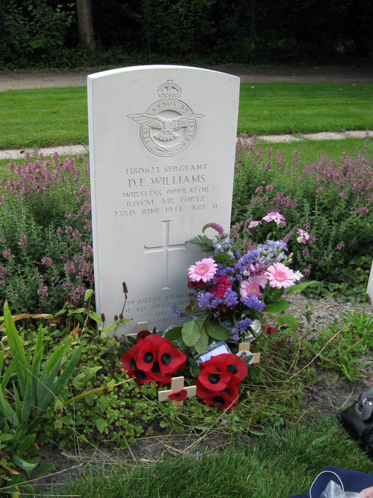
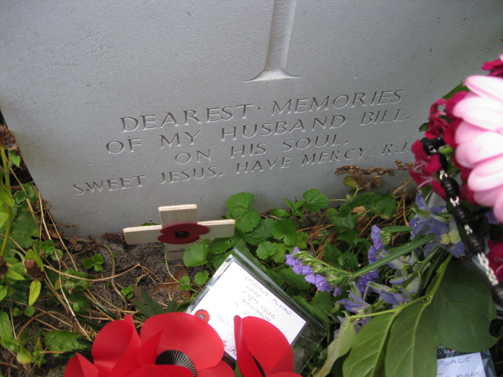
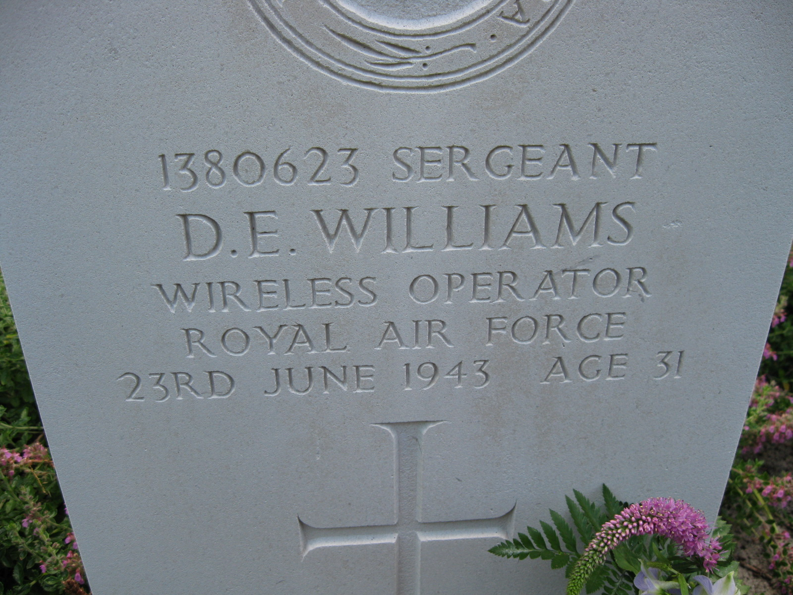
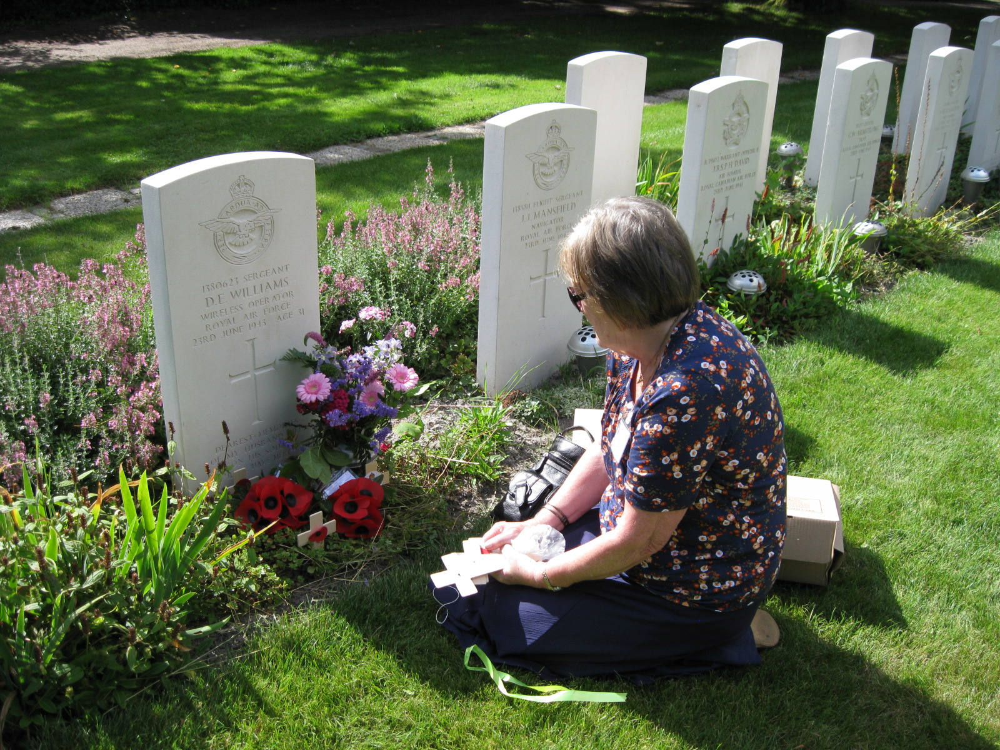

Sergeant David Ellis Williams
Royal Air Force | 1380623 | 97 Squadron | ED928 (OF-B)
Visit To Cemetery
A visit was made to Soestbergen General Cemetery in Utrecht by David's daughter Patricia in 2013.
This is the second time that Patricia has visited the cemetery and was extremely pleased with the condition of the graves of which, the headstones had been renewed.
The photo below shows the headstone of David's grave, alongwith with commemorative flowers and poppies.

The next photo shows a closer view of the personal message placed onto the gravestone.

This photo shows a closer view of the personal message that adornes the gravestone.

The final photo shows Patricia next to the gravestone. In the background next to David's grave is the gravestones of the other members of the plane.
